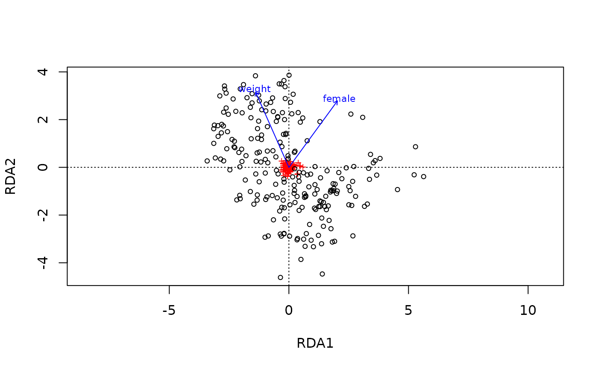

Used before plotting with ord_plot() or explorating interactively with ord_explore(). Use method = "auto" to automatically pick an appropriate method from:
"PCA" (Principal Components Analysis) combines taxa abundances into new dimensions. The first axes display the greatest variation in your microbial data.
"RDA" (Redundancy Analysis) is constrained PCA, roughly speaking. It finds variation in your data that can be explained both by the constraints variables, and the microbial data.
"PCoA" (Principal Coordinates Analysis) finds a coordinate system that best preserves the original distances between samples.
"CAP" (Constrained Analysis of Principal Coordinates) is also known as distance-based Redundancy Analysis.
Alternatively to leaving method = "auto", you can explicitly specify any of the above methods, or choose one of the following:
"CCA" (Canonical Correspondence Analysis) - NOT canonical correlation analysis!
"NMDS" (Non-metric Multidimensional Scaling)
You are strongly recommended to check out this useful website for introductory explanations of these methods the "GUide to STatistical Analysis in Microbial Ecology": https://sites.google.com/site/mb3gustame/
Usage
ord_calc(
data,
method = "auto",
constraints = NULL,
conditions = NULL,
scale_cc = TRUE,
verbose = TRUE,
...
)Arguments
- data
psExtra object: output from dist_calc(), or tax_transform() if no distance calculation required for method e.g. for RDA
- method
which ordination method to use? "auto" means automatically determined from psExtra and other args. If you really know what you want: manually set one of 'PCoA', 'PCA', 'CCA', 'CAP' or 'RDA'
- constraints
(a vector of) valid sample_data name(s) to constrain analyses, or leave as NULL for unconstrained ordination. Non-NULL values are compatible with method = "auto"/"RDA"/"CAP"
- conditions
(a vector of) valid sample_data name(s) to partial these out of analyses with Condition(), or leave as NULL
- scale_cc
If TRUE (default) ensures any constraints and conditions variables are scaled before use, to ensure their effects are comparable. If set to FALSE you must ensure you have already set the variables on a similar scale yourself! If there are no constraints or conditions, scale_cc does nothing.
- verbose
If TRUE or "max", show any warnings and messages about constraint and conditions scaling and missings etc. FALSE suppresses warnings!
- ...
optional arguments passed on to phyloseq::ordinate()
Details
Extends functionality of phyloseq::ordinate(). Results can be used directly in ord_plot(). You can extract the ordination object for other analyses with ord_get()
Examples
library(phyloseq)
library(vegan)
data("dietswap", package = "microbiome")
# create a couple of numerical variables to use as constraints
dietswap <- ps_mutate(
dietswap,
female = dplyr::if_else(sex == "female", true = 1, false = 0),
weight = dplyr::recode(bmi_group, obese = 3, overweight = 2, lean = 1)
)
# add a couple of missing values to demo automated dropping of observations with missings
sample_data(dietswap)$female[c(3, 4)] <- NA
# compute ordination
test <- dietswap %>%
tax_agg("Genus") %>%
dist_calc("bray") %>%
ord_calc(constraints = c("weight", "female"))
#> Dropping samples with missings: 2
#>
#> Centering (mean) and scaling (sd) the constraints and/or conditions:
#> weight
#> female
# familiarise yourself with the structure of the returned psExtra object
test
#> psExtra object - a phyloseq object with extra slots:
#>
#> phyloseq-class experiment-level object
#> otu_table() OTU Table: [ 130 taxa and 220 samples ]
#> sample_data() Sample Data: [ 220 samples by 10 sample variables ]
#> tax_table() Taxonomy Table: [ 130 taxa by 3 taxonomic ranks ]
#>
#> psExtra info:
#> tax_agg = "Genus"
#>
#> bray distance matrix of size 220
#> 0.7639533 0.7699252 0.80507 0.731024 0.7283254 ...
#>
#> ordination of class: capscale rda cca
#> capscale(formula = distance ~ weight + female, data = data)
#> Ordination info:
#> method = 'CAP' constraints = 'weight+female'
str(test, max.level = 1)
#> Formal class 'psExtra' [package "microViz"] with 15 slots
# compute RDA with centre-log-ratio transformed taxa
test2 <- dietswap %>%
tax_agg("Genus") %>%
tax_transform("clr") %>%
ord_calc(constraints = c("weight", "female"))
#> Dropping samples with missings: 2
#>
#> Centering (mean) and scaling (sd) the constraints and/or conditions:
#> weight
#> female
# plot with vegan package graphics to show it returns a standard ordination object
ord_get(test2) %>% vegan::ordiplot()

# This is equivalent to CAP with "aitchison" distance
ord_plot(test2, plot_taxa = 8:1)
 # but the latter (below) doesn't allow plotting taxa loadings with ord_plot
dietswap %>%
tax_agg("Genus") %>%
dist_calc("aitchison") %>%
ord_calc(constraints = c("weight", "female")) %>%
ord_plot()
#> Dropping samples with missings: 2
#>
#> Centering (mean) and scaling (sd) the constraints and/or conditions:
#> weight
#> female
# but the latter (below) doesn't allow plotting taxa loadings with ord_plot
dietswap %>%
tax_agg("Genus") %>%
dist_calc("aitchison") %>%
ord_calc(constraints = c("weight", "female")) %>%
ord_plot()
#> Dropping samples with missings: 2
#>
#> Centering (mean) and scaling (sd) the constraints and/or conditions:
#> weight
#> female